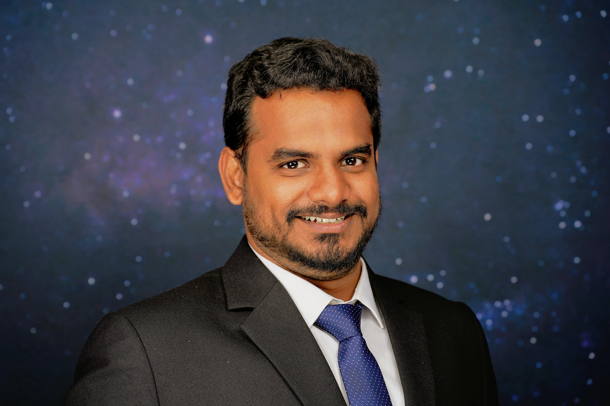

Seven years leading high-stakes programs at India's national space agency with no room for error and no established playbooks. Now bringing that same discipline to complex, cross-functional programs at the intersection of technology and real-world impact.
Former Program Manager at the Indian Space Research Organisation, specializing in end-to-end program delivery, cross-functional stakeholder alignment, and real-world deployment of safety-critical systems. Proven track record of managing $2M+ in programs, securing $1M in government funding, and building processes that scale across organizations.

I spent seven years at the Indian Space Research Organisation managing programs where the margin for error was zero. Every system I built, every team I led, and every stakeholder I aligned fed directly into decisions that affected rocket launches and national disaster response. That environment shaped everything about how I work. I started as a scientist, which means I earned my credibility by understanding the technical work deeply enough to ask the right questions, challenge the right assumptions, and translate complexity into decisions that non-technical stakeholders could act on. That combination of technical fluency and program management instinct is what makes me effective in environments where the problems are genuinely hard and the stakes are genuinely high.
Across seven years and two large-scale national programs, I learned that great program management is not about having perfect plans. It is about seeing risks before they become crises, keeping the right people aligned when things get messy, and building the kind of trust that makes cross-functional teams move faster together than they ever would apart.
I am currently completing my MBA in Strategy and Technology at the University of Rochester Simon Business School, expanding my toolkit for complex business and organizational challenges.
Cost Savings Delivered
Years Research Experience
Team Members Led
IEEE Publications
Pursuing an MBA in Strategy and Technology to complement seven years of hands-on program management experience with frameworks for complex business decision-making. As VP of Marketing for the Data Analytics Club and VP of Finance for Net Impact, I applied program management instincts to student-led organizations, learning that driving alignment across volunteers is often harder than managing paid teams. Through Simon Vision Consulting, I worked on real-world GTM and pricing strategy engagements, translating client needs into structured recommendations under tight timelines.
I applied program management thinking to one of the hardest challenges in residential clean energy, building the analytical and strategic foundation for a dual-sided electrification marketplace from the ground up. I developed a 5-year financial model across 80 plus product categories that informed executive decisions on scaling from 200 to 900 homes annually, designed a partner evaluation framework that prioritized 30 high-value organizations across 103 candidates and accelerated pilot launch by 2 months, and built an ESG impact framework that translated homeowner outcomes into sponsor-facing sustainability metrics for executive reporting. The work was early stage, ambiguous, and fast-moving, which is exactly the kind of environment where I do my best work.
I led partnership strategy development for MentorX's career coaching services across APAC, coordinating market research across 70 plus education consulting firms in India and Vietnam to identify partnership opportunities. I implemented CRM process improvements that cut lead processing time by 30% and drove 40% growth in client engagement by building a structured outreach and follow-up framework from scratch.
As Senior Program Manager, I led safety-critical atmospheric programs at ISRO, managing cross-functional teams and government stakeholders to deliver AI-driven forecasting systems that directly supported rocket launch decisions and national disaster response. I spearheaded a 1-year adoption program for a novel AI storm nowcasting system, conducting quarterly reviews with launch directors and achieving permanent integration with 97.5% accuracy and 2-hour advance warning. I secured $1M in government funding by building a coalition of 20 organizations, facilitating 6 months of negotiations, and designing a data sharing governance framework that resolved competing institutional interests. I also led a cross-functional team of 5 to extend critical warning lead time 7x from 15 minutes to 2 hours, and optimized sensor deployment across a 5,000 square mile region using simulation driven site selection, driving an estimated $500K in infrastructure savings.
As Project Manager, I directed a national GPS infrastructure program, building and deploying a 25-station monitoring network across Southeast India while managing a 20-member cross-functional team spanning engineers, scientists, vendors, and government stakeholders. I delivered a $1M program on schedule, 10% under budget, and with zero data loss. When a critical vendor relationship collapsed mid-program and threatened to restart a 4-month procurement cycle and expire government budget, I escalated directly to the manufacturer and drove alignment with a new supplier within 30 days. I also resolved 50% real-time data transmission failures by redesigning data architecture with store-and-forward redundancy, reducing gaps to 2%. I built a two-stage vendor evaluation framework from scratch that eliminated procurement bias and was adopted department-wide, reducing CAPEX by 11% across programs.
My undergraduate degree in Physical Sciences at IIST gave me the analytical foundation and scientific rigor that still informs how I approach complex problems. Four years of studying systems that operate at massive scale taught me that even the most chaotic environments follow patterns if you are patient and precise enough to find them.
Thermofisher Scientific & SVC Bio
Conducted strategic analysis and operational assessments for leading life sciences companies. Delivered data-driven recommendations for market positioning and operational efficiency improvements through comprehensive market research and competitive analysis.
*Details confidential due to NDA
Financial Services Innovation
Developed machine learning model for automated loan approval decisions achieving 73% accuracy with 97% precision. Created potential for $73,000 monthly cost savings and 27% reduction in manual review processes.
Policy & Market Analysis
Comprehensive analysis of renewable energy financing alternatives affecting $3+ billion in rural renewable projects during policy uncertainty. Developed strategic roadmap for 6 alternative financing mechanisms including carbon credits and scope-3 partnerships.
Atmospheric Science Research
Pioneered 3-year study of 24-hour water vapor patterns using GNSS network data across seasonal variations. Applied harmonic analysis revealing that diurnal harmonics are significant 93% of the time, enhancing regional atmospheric dynamics understanding for weather prediction.
3D Atmospheric Mapping
Developed optimal GNSS receiver configurations for 3D atmospheric water vapor mapping. Determined minimum 5-receiver setup achieving reliable profiling with advanced inversion techniques, comparing rectangular vs. conical atmospheric field approaches.
Predictive Meteorology
Created hybrid prediction model using Light Gradient Boosting Machine extending storm warning time from 15 minutes to 2 hours. Achieved 97% accuracy with only 5% false alarm rate, significantly improving disaster preparedness capabilities for meteorological applications.
Data Quality & Validation
Led comprehensive 8-year validation study of INSAT-3D total column water vapor against ground-based GNSS measurements. Identified systematic biases and recommended algorithm improvements for enhanced meteorological applications across multiple temporal scales.
My fascination with the cosmos extends far beyond my professional work in atmospheric science. I'm deeply passionate about astronomy, spending countless hours stargazing and following the latest space exploration missions. From tracking Mars rover discoveries to eagerly awaiting James Webb Space Telescope revelations, I find the vastness of space both humbling and inspiring. This cosmic perspective often influences how I approach complex problems – always thinking about the bigger picture and long-term implications.
I'm captivated by science fiction films that explore the intersection of technology, humanity, and future possibilities. Whether it's contemplating the implications of AI in "Ex Machina," the time-travel complexities in "Interstellar," or the philosophical questions raised in "Blade Runner 2049," sci-fi movies fuel my imagination and often spark innovative thinking in my professional work. I particularly enjoy films that explore space colonization, climate futures, and technological singularities.
Beyond sci-fi, I'm drawn to thriller and horror movies that challenge conventional thinking and keep me on the edge of my seat. From psychological thrillers like "Shutter Island" to space horrors like "Event Horizon," I appreciate films that blend scientific concepts with compelling narratives. Movie nights often turn into discussions about the scientific accuracy of plot elements or the strategic decisions characters make under pressure.
Sports play a significant role in my life, both as stress relief and team-building experiences. Soccer and basketball satisfy my love for strategic team coordination – much like managing cross-functional research teams. Cricket connects me to my roots and teaches patience and long-term strategic thinking. Table tennis keeps my reflexes sharp and provides quick mental stimulation between intense work sessions. Each sport has taught me different aspects of leadership, collaboration, and perseverance under pressure.
Cooking serves as my creative outlet and a way to experiment with different cultures and flavors. There's something satisfying about following a complex recipe (much like a scientific protocol) while adding personal touches. Video editing combines my technical skills with artistic expression, allowing me to tell stories through visual media – a skill that surprisingly translates well to creating compelling data visualizations and presentations.
As Sports Secretary of the NARL Employee Recreation Club, I discovered my passion for bringing people together and creating inclusive environments where colleagues can connect beyond work. Organizing tournaments and events taught me valuable lessons about stakeholder management, event planning, and building community – skills that proved invaluable in my subsequent leadership roles and strategic thinking.
Currently seeking full-time opportunities in Business Strategy and Sustainability Strategy. I'm passionate about leveraging my unique blend of scientific rigor and strategic thinking to drive meaningful business impact. Let's discuss how analytical expertise can transform complex challenges into strategic advantages.